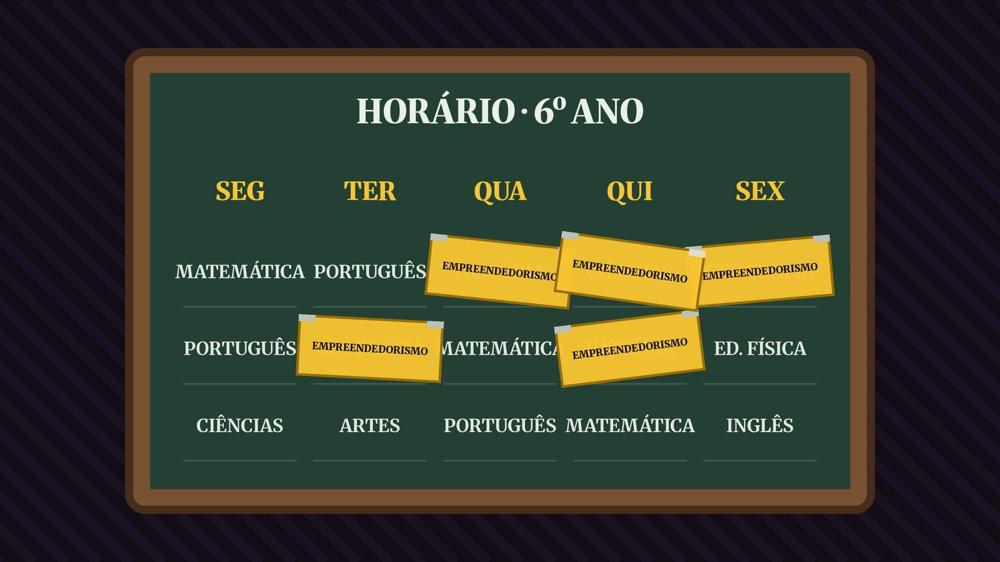

Cachoeirinha · Educação
Aula de empreendedorismo toma o lugar de outras disciplinas em Cachoeirinha, relatam professores; programa já custou R$ 2,4 milhões
O contrato com o Instituto Manager proíbe que as aulas interfiram nas outras disciplinas, mas docentes da rede municipal dizem que é exatamente o que acontece. Até novembro, a prefeitura pagou R$ 2,4 milhões pelo programa, com dinheiro da educação.
Redação
25 DE NOV DE 2026, 12:12
Professores da rede municipal de Cachoeirinha relatam que as aulas do "Programa Jovem Empreendedor", contratado pela prefeitura, estão sendo dadas no horário de outras disciplinas. Os mais atingidos, segundo eles, são componentes com poucas horas na semana, como Geografia, História e Ciências. O programa já custou R$ 2,4 milhões aos cofres do município em 2026.
O Sob Vigia ouviu docentes de diferentes escolas da rede. Eles pediram anonimato por medo de retaliação.
"Turmas perderam metade da carga horária"
Segundo os professores, os dois períodos semanais do programa são tirados de outras disciplinas. Em componentes que têm apenas dois períodos por semana, como Geografia, História e Ciências, turmas chegaram a perder metade da carga horária durante semanas. Há professores que passaram meses sem conseguir dar aula do seu componente. Uma docente relata que as direções passaram a fazer rodízio entre as disciplinas, para não prejudicar sempre as mesmas.
Os docentes também dizem que o instituto usa os computadores e os materiais das próprias escolas, que ficam indisponíveis para as demais turmas, descrevem as aulas como improvisadas e afirmam não ter visto resultados ao longo do ano. Uma das professoras ouvidas diz que os instrutores são empreendedores, sem formação na área da educação, e que houve troca de equipe ao longo do ano.
O que o contrato diz
O termo de referência do contrato determina o contrário. As aulas, de duas horas semanais por turma, devem seguir um cronograma definido com as escolas "de modo a não interferir nas demais atividades curriculares". O instituto também deve disponibilizar "todos os recursos humanos, pedagógicos e tecnológicos" necessários, "sem ônus adicional à Administração Pública", com "equipe técnica qualificada e multidisciplinar, com experiência comprovada em formação educacional". À prefeitura cabe apenas ceder os espaços.
Cada pagamento mensal depende de o fiscal do contrato atestar que os serviços "foram executados conforme o contrato".
Milhões da educação
A prefeitura contratou o Instituto Manager Desenvolvimento Profissional, de Passo Fundo, sem licitação, por inexigibilidade, em fevereiro de 2026 (Contrato nº 010/2026). O programa atende turmas do 5º ao 7º ano e é pago com recursos de impostos vinculados à educação, a mesma fonte que paga professores, merenda e manutenção das escolas.
Segundo o relatório de pagamentos da prefeitura, o instituto recebeu R$ 272.160 em abril e o mesmo valor em maio. Em 27 de maio, um termo aditivo acrescentou 11 turmas, incluindo turmas da Educação de Jovens e Adultos (EJA). Desde junho, a prefeitura paga R$ 313.740 por mês. Até novembro, o total chegou a R$ 2.426.760.
São R$ 3.780 por turma por mês, para turmas de 30 alunos: cerca de R$ 126 por aluno, por mês, por dois períodos semanais de aula.
A prefeitura tem divulgado atividades do programa. Em agosto, a Secretaria de Inovação, em parceria com o Instituto Manager e a Secretaria de Educação, apresentou 15 projetos de alunas do Jovem Empreendedor numa feira no Shopping do Vale.
O que não bate
Um público que não estava no contrato. O objeto do contrato é limitado a alunos do 5º, 6º e 7º anos do ensino fundamental. O aditivo incluiu turmas de EJA, de jovens e adultos, justificando a ampliação com a "promoção do letramento digital, domínio de ferramentas de Inteligência Artificial e o protagonismo estudantil".
O que está no papel e o que relatam as escolas. O contrato proíbe interferir nas outras disciplinas e obriga o instituto a levar todos os recursos. Os professores relatam aulas no lugar de outras disciplinas e uso dos computadores das escolas.
O que diz a prefeitura
O Sob Vigia enviou perguntas à Secretaria Municipal de Educação de Cachoeirinha na semana passada. Até a publicação desta reportagem, não houve resposta.
O espaço segue aberto à secretaria e ao Instituto Manager.
Fontes
- Contrato nº 010/2026 e termo de referência (Inexigibilidade nº 3/2026), Portal da Transparência de Cachoeirinha.
- Termo Aditivo nº 1/2026 ao Contrato 010/2026, de 27/05/2026, Portal da Transparência de Cachoeirinha.
- Relatório de pagamentos da Prefeitura de Cachoeirinha, credor "Manager", exercício de 2026, emitido em 16/11/2026.
- Prefeitura de Cachoeirinha (Ascom), divulgação da Feira de Inovação e Economia Criativa, publicada pelo O Repórter em 18/08/2026.
- Entrevistas com docentes da rede municipal, sob anonimato.
Leia também
- Menos concursados, mais temporários e terceirizados: o que mudou no quadro da Prefeitura de Gravataí
- 965 faltas de água e dois aumentos em seis meses: o saneamento que Gravataí entregou à Aegea
- Chega: servidores de Gravataí aprovam indicativo de greve por tempo indeterminado a partir de 1º de dezembro